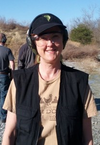

My GPS found Caswell Ranch with no issues. The website says “Look for big red dutch barn” and that was easy to spot from the road.
I was early enough to snap a few pictures, get good parking, register and find the bathrooms.
Beverly signed me in, made me feel welcome, and let me know about future training classes. Dean Brevit wasn’t there. I think he was at the 2013 IDPA Indoor National Championships. However, many of the men I met at the match mentioned Dean and all had very good things to say about training with him. I plan to attend the FUNDAMENTAL COMPETITION PART 1 & 2 classes once they are posted on the calendar.
And, one of the guys recognized me from this blog! That still seems odd. Most of the guys shooting know so much more than I do.

Stage 2: black parts of target are considered cover
Stage 2
My squad started on Stage 2. The scenario: see the 6 targets above. The black areas are considered cover and any shots into the black will not be scored. Best I remember, here’s what we shot:
- Shoot 1 in each target from 10 yards, administrative reload
- Shoot 1 in each target, from 7 years, strong hand only, administrative reload
- Shoot 1 in each target, from 5 yards, week hand only starting from low ready (safety already off).
- The time to reload and move forward was not part of the scoring.
I was up early and managed to jam my gun after the first shot. I cleared one round, tried again, cleared another, and the Range Safety Officer (RSO) pointed out the magazine was loose. I never got upset but I was puzzled. He stopped the clock and told me we were going to start over. That’s not normal match protocol, but clearly this wasn’t going to give me an unfair advantage as I wasn’t going to win anything… but it did allow me to clear my head and focus on the stage. It was kind and appreciated. These matches aren’t sanctioned or this wouldn’t have been an option. Once I started over I ended the stage with no downs: all the shots were in the down zero area. I’m slow. But clearly my accuracy is improving. I ended the stage with a smile.
Skills
I do need to understand why my gun is jamming and dropping the magazine at matches. It doesn’t happen to me at the range when I practice, just at matches. In the last class I took, I learn to check these things after loading: tug the magazine, press check (verify a round is loaded by easing the slide back just enough to see it) and verify visually and by touch the gun is in battery (the slide is fully forward).
I have been skipping the “tug”. Adding a safety to the gun made the press check more complicated and all my attention has gone to that step. Turns out, at a competition when you are using a barney mag (with a single round to top off) there really is no need for the press check. The RSO at my last match in Oxford told me that but I didn’t understand why. The RSO at this match put it in simple terms: if there was one round in the magazine and you remove the magazine, where else could that round possibly be? Without the press check I can put the safety back on as soon as I load and leave it there.
So going forward, at a match, I need to focus on the magazine and battery checks. Hopefully that will address the issue I’ve been having. If not, there is more to learn. One of the RSOs thought I might be limp-wristing the gun but I don’t see how that could cause the magazine to come loose.
The Rest of the Stages
I look like a dork, but I have all my safety gear on and here’s the proof that it was t-shirt weather in February!
I didn’t take pictures of all the stages and I had no further malfunctions. For February, it was a beautiful sunny day. After getting very cold at the last Oxford match I brought several layers. I ended up wearing a t-shirt and a concealment vest. The sunshine was a real bonus.
My accuracy is definitely getting better. Here’s the number of downs for each stage:
Stage 1: 0 down, 2nd to last
Stage 2: 0 down, 2nd to last
Stage 3: 0 down, 2nd to last
Stage 4: 1 down, 4th to last
Stage 5: 10 down, 2nd to last (missed a shot)
Stage 6: 1 down, 5th to last
Over All: Dead last.
The guys on my squad were encouraging. “Work on your accuracy first, the speed will come”. The RSO reminded me to aim for the berm, not the ground, when pulling the trigger after unloading (thank you). We had stages with movement and one of the shooters took two of us aside to demonstrate the best way to move smoothly: walk heel-to-toe (which I knew) and at a slight crouch (which I wasn’t doing). Again, thank you. I used to compete in dancing and I know how to walk heel-to-toe (can you say waltz?) either forward or backwards, but the crouch makes all the difference.
Stages included these props and skills: We started one stage with our hand on the battery of a truck with the hood propped up. We shot bad guys using the truck as cover. One stage was set up like a bowling alley and we started by dropping a ball. Some stages required head shots. At least one stage required slicing the pie, another shooting in tactical sequence. One required kneeling behind cover. One required shooting all targets while seated at a picnic table. One required moving from a doorway, to a window, to another window.
Unlike Oxford, there is no place to put your gear except on the ground in the bays where stages are set up. I need to bring a ground barrier for wet days.
I had a few non-shooting conversations. Oddly enough, one was about climbing Mount McKinley. One guy in our squad was wearing a t-shirt from Alaska and that started up a conversation about the state and a comment from another shooter about wanting to climb the mountain. I’d made an attempt when I was younger so I actually had something to contribute. It was nice to be able to talk about something other than what I was doing wrong.
At the end of the day, just like all the matches I shoot, I was a happy camper. I’m starting to recognize faces, even if I’m lousy with names and I hope to shoot matches at Caswell Ranch on a regular basis.


{kind=link}
{kind=link}
{kind=link}